Yes, as built today. Tithe a quarter of your food and drop beacons, then spores, on whichever of the rival's piles has the fewest of its walkers. That plan, soft, won 127 of 128 games against eight other plans. The rest line up on a ladder with no rock-paper-scissors anywhere, so the strategy is shallow: one rule wins.
Both moulds start equal on the field: 23 small piles mirrored left to right, more food landing every 15 s from 0:20 (seven times, somewhere new each dish). Whoever has eaten more at 2:30 wins. Each side sets a tithe (0, 10, 25 or 40% of every bite goes to its bank instead of its mould, so money is walkers not grown) and spends it on:
Each cell is 16 games, the row's plan on each side of 8 dishes: games the row won, and its mean share of the food eaten. Gold where the row ate more, violet where it ate less. A ringed cell survives a Holm correction over the 36 pairings.
| soft | raid | idle | centre | counter | random | fort | boom | hoard | |
|---|---|---|---|---|---|---|---|---|---|
| soft | · | 16/160.76 | 15/160.68 | 16/160.71 | 16/160.75 | 16/160.70 | 16/160.76 | 16/160.78 | 16/160.76 |
| raid | 0/160.24 | · | 16/160.68 | 9/160.55 | 13/160.63 | 14/160.70 | 12/160.62 | 16/160.74 | 16/160.77 |
| idle | 1/160.32 | 0/160.32 | · | 6/160.50 | 3/160.47 | 12/160.60 | 16/160.71 | 16/160.67 | 16/160.79 |
| centre | 0/160.29 | 7/160.45 | 10/160.50 | · | 11/160.58 | 12/160.56 | 14/160.61 | 13/160.62 | 16/160.72 |
| counter | 0/160.25 | 3/160.37 | 13/160.53 | 5/160.42 | · | 13/160.58 | 16/160.63 | 16/160.63 | 16/160.67 |
| random | 0/160.29 | 2/160.30 | 4/160.40 | 4/160.44 | 3/160.42 | · | 11/160.57 | 12/160.59 | 13/160.71 |
| fort | 0/160.24 | 4/160.38 | 0/160.29 | 2/160.39 | 0/160.37 | 5/160.43 | · | 8/160.56 | 16/160.79 |
| boom | 0/160.23 | 0/160.26 | 0/160.33 | 3/160.38 | 0/160.37 | 4/160.41 | 8/160.44 | · | 16/160.70 |
| hoard | 0/160.24 | 0/160.23 | 0/160.21 | 0/160.28 | 0/160.34 | 3/160.29 | 0/160.21 | 0/160.30 | · |
| Plan | Tithe | What it buys | Mean share |
|---|---|---|---|
| soft | 25% | a beacon, then spores, on the rival's pile with the fewest of its walkers (49 beacons and 13 spores a game) | 0.737 |
| raid | 40% | hunt, then beacons and spores on the rival's pile nearest its own home | 0.615 |
| idle | 0 | nothing: the thickest mould | 0.548 |
| centre | 25% | the piles near the centre line it does not hold, then expands | 0.540 |
| counter | 10% | habits only: the one that beats the rival's | 0.510 |
| random | random | something at random about one second in four | 0.465 |
| fort | 10%, 25% under attack | reinforces its own piles the rival eats at | 0.431 |
| boom | 25% | races for each pile of new food | 0.389 |
| hoard | 40% to 1:20 | saves, then raids with everything | 0.264 |
Doing nothing comes third: idle beat fort, boom and hoard 16 of 16 each, so a tithe spent badly is worse than none. Saving loses to every plan, since by 1:20 the lead has snowballed and the food is nearly gone.
Dish seed 2. Left: gold plays soft against an idle violet. Right: the same dish with both idle. Counts are gold's share of the food eaten so far, walkers gold/violet, piles held gold/violet, and what gold has bought. The tip in the corner is the old game's.
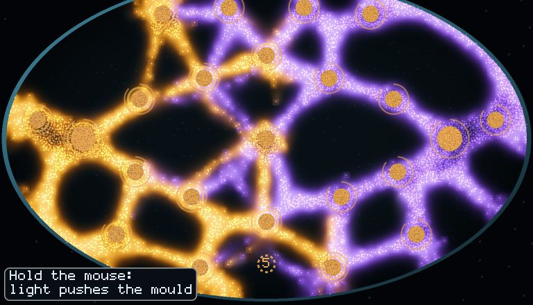
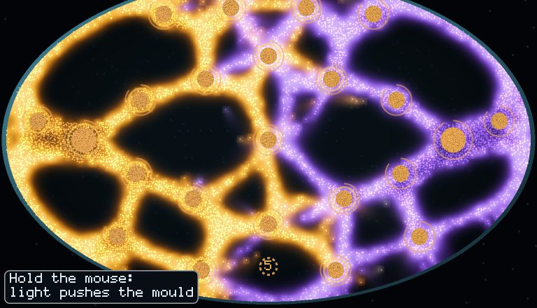
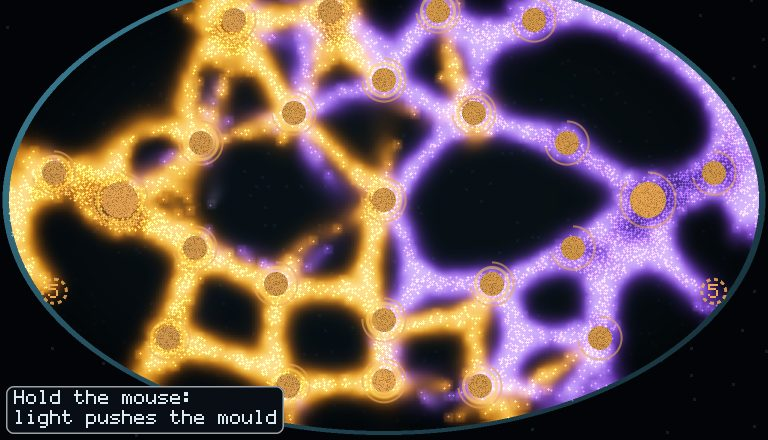
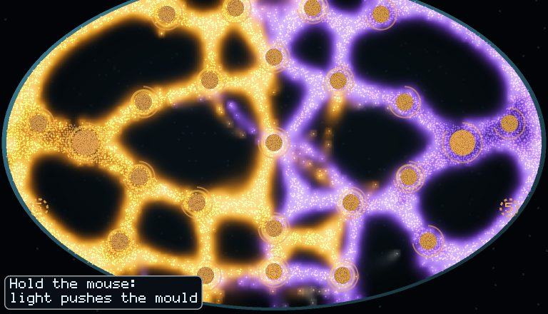
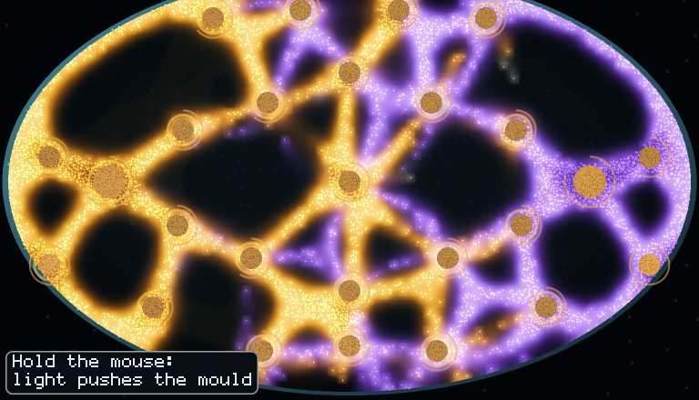
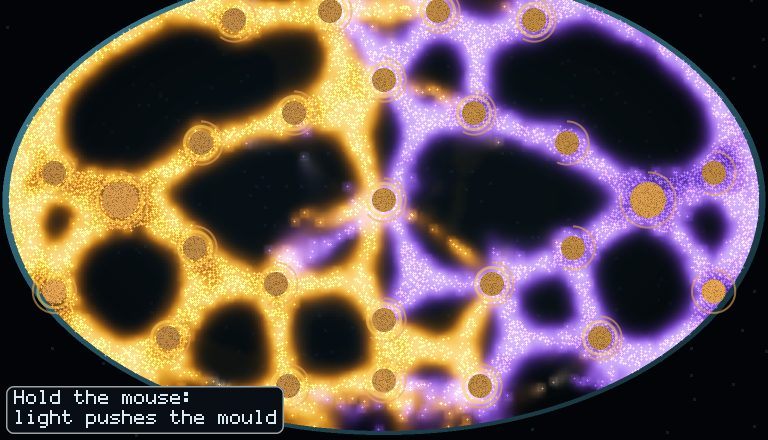
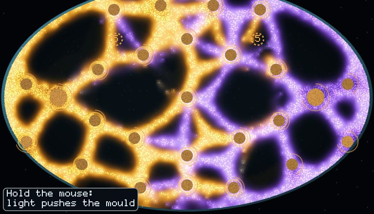
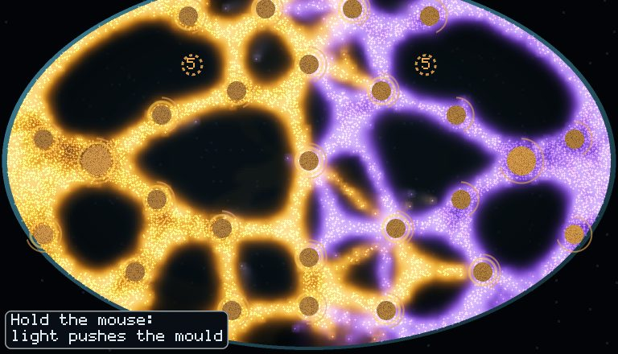
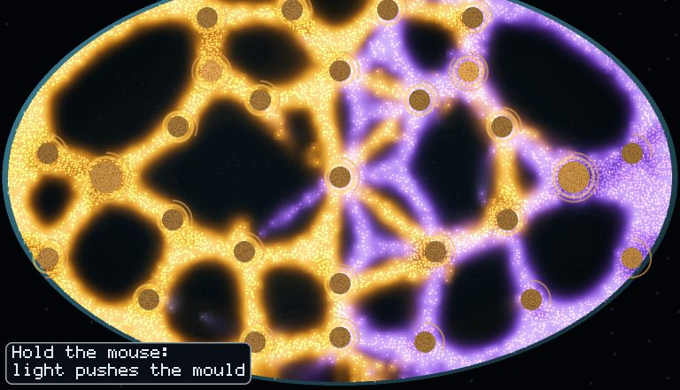
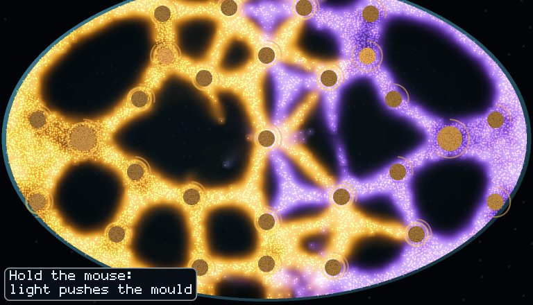
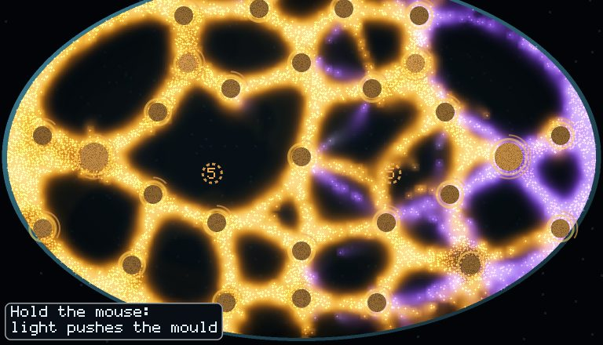
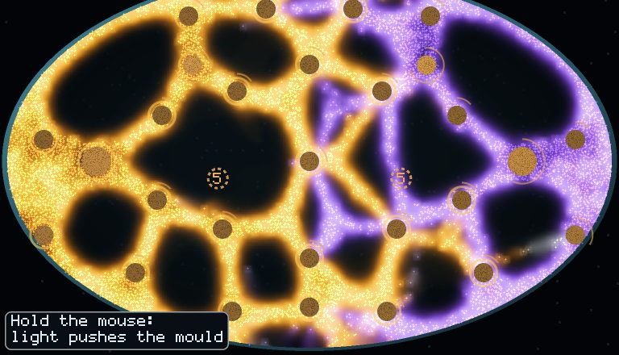
Left alone, gold has the better side of this dish and eats 57.2% by the bell. Playing soft it eats 67.1%, and violet is gone at 1:43.
Dish seed 3: gold soft against violet fort, which tithes 10% and reinforces any pile the rival eats at. Fort's spores always land after soft's.
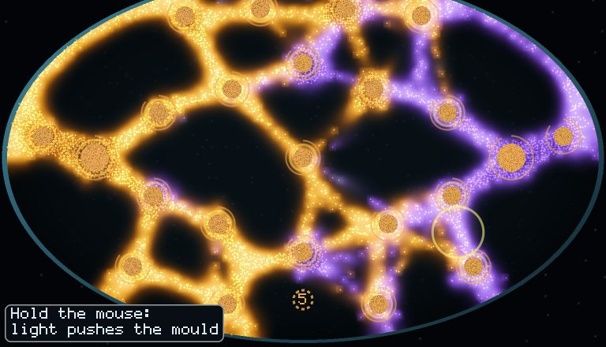
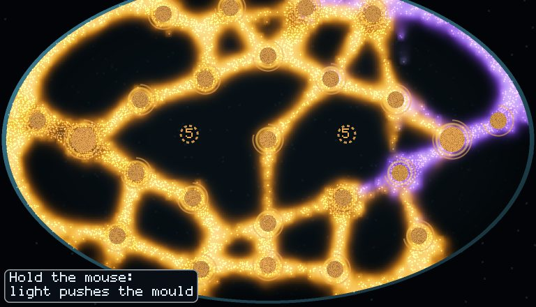
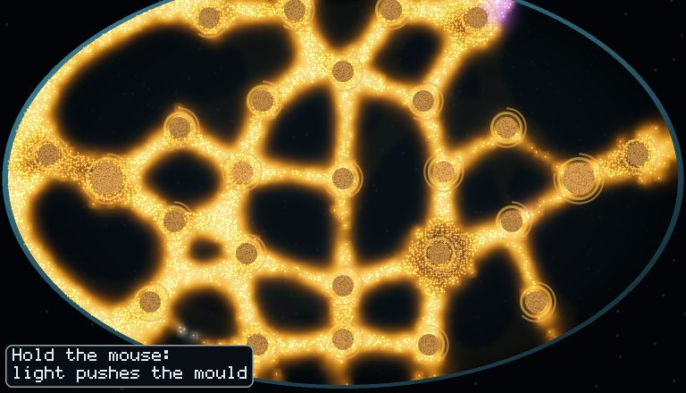
Violet is gone at 0:47, with gold at 77.5% of the food eaten.
The defender's walkers are spread over every pile, and anything it buys lands after the attack. Raid, which hits the nearest pile however well held, comes second.
Four changes, 2 dishes from both sides each, so these are signs rather than verdicts.
| Change | Result |
|---|---|
| Guard: beacons on its own thinnest border piles before any attack, spores where attacked | lost to soft 4/4, and to idle 4/4 |
| Lean: soft's target with beacons only, 10% tithe | lost to soft 4/4, won 1 of 4 against idle: beacons alone do about nothing |
| Spores only within 25 cells of your own fed tube | soft still beat boom, centre and fort 4/4, idle 3/4: the field is so meshed that everything is in reach |
| Spores land asleep for 5 s, holding their cells but fighting as unfed | soft still beat boom, fort and guard 4/4; idle drew level, 2/4 |
| The same, but spores at home wake at once | no change: soft 4/4 against boom, fort and guard; idle 2/4 |
The only thing that dented soft was a thick, untithed mould against spores that land asleep. Being thick everywhere answers an attack on the thinnest spot once the attack is slow enough, but no defender that spends money found that answer.
Each idea is a change to test the same way: nine plans, 576 games, about 20 minutes on four runners.